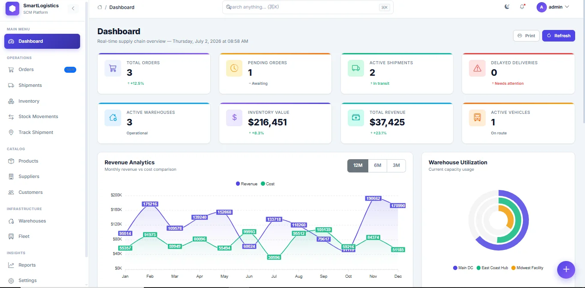
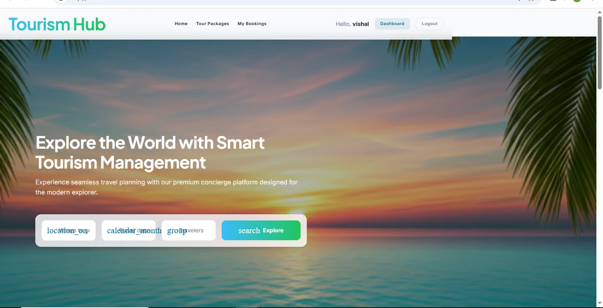

Case Studies
Enterprise Backend Systems & Distributed Architecture
Production-grade Spring Boot microservices, high-throughput Kafka event streams, Redis caching, and ACID-compliant banking engines built with zero-trust security.
Production-grade Spring Boot microservices, high-throughput Kafka event streams, Redis caching, and ACID-compliant banking engines built with zero-trust security.

Problem: Orchestrating order placement, courier dispatch, and billing transactional updates across isolated schemas without risking inconsistency during network anomalies.
Solution: Built an asynchronous Saga orchestrator coordinating 8 Spring Boot microservices via Apache Kafka. Integrated Redis caching to reduce database read bottlenecks.
Problem: Managing high-velocity balance transfers and deposit operations securely while ensuring transactional consistency under concurrent transfers.
Solution: Developed 30+ REST APIs executing secure transactions. Configured role-based access controls using Spring Security 6 and stateless JWT token exchanges.

Domain implementations for supply chain tracking and hotel booking pipelines.

Problem: Resolving database read delays in dashboard metric tracking and enabling fuzzy search across large supply chain stock tables.
Solution: Developed live KPI metrics analytics panels with fuzzy search selectors. Configured a Redis cache failover system to handle server timeouts.
Problem: Mapping nested hotel room bookings, travel itineraries, and customer reservations cleanly without query amplification issues.
Solution: Designed REST APIs managing travel packaging CRUD flows. Implemented Spring Data JPA schema mapping (one-to-many, many-to-one) and tested via Postman.

Udemy — 2025 (Completed)
Udemy — 2026 (Completed)
Udemy — In Progress